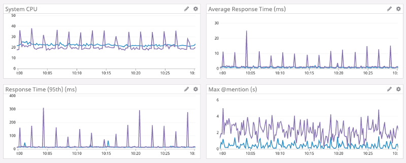
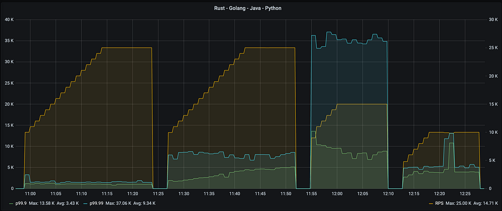
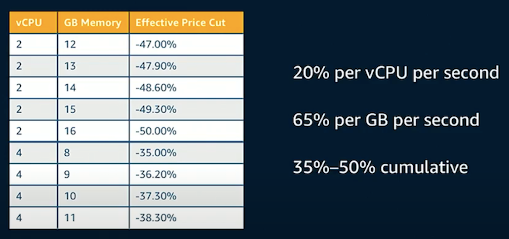
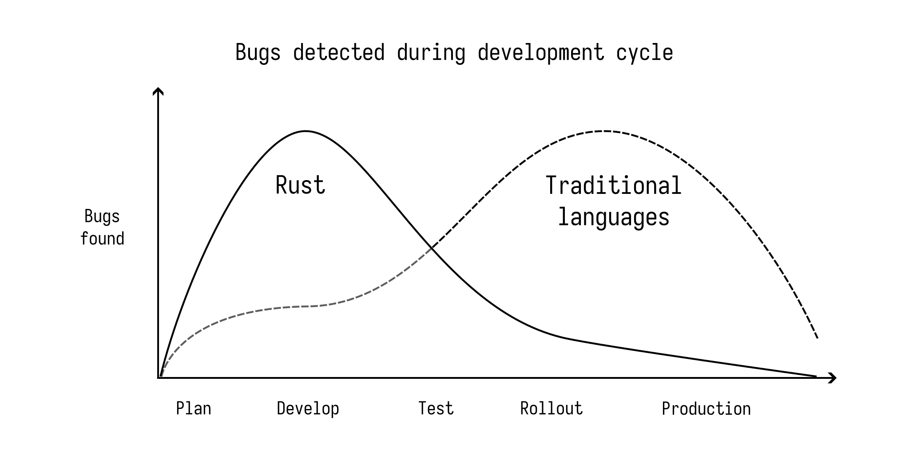

Interest in Rust has surged in recent years, with tech leaders such as Microsoft, Google, and Amazon coming forward to share their experiences of leveraging Rust for critical systems.
Much of the dialogue about Rust, however, is still driven by those who have not leveraged Rust in a significant production capacity or have only done so for non-critical systems. This results in a skewed understanding of Rust’s application in production settings, especially for small and medium-sized businesses, where discussions tend to highlight performance benefits and gloss over other crucial aspects.
In my role as a Rust consultant, I have had the opportunity to engage with many companies, large and small. I found that companies value Rust’s stability, and long-term maintainability on par with its performance benefits.
This overview distills key insights, offering a resource for businesses to assess whether Rust is the right tool for their use-case or not.
The intent is to provide an honest look at Rust’s practicality for production to help decision-makers understand its benefits and challenges.
Streamline Your Decision-Making with Our Compact Audio Guide on Rust
Considering Rust for your production needs?
You might also want to listen to this podcast episode of Rust in Production.
Key Highlights:
- Insights into hiring Rust engineers.
- Tips to flatten the learning curve.
- Effective strategies for Rust adoption.
- The significant impact of Rust’s performance on user experience.
- And much more.
This episode offers a balanced perspective on the advantages and challenges of implementing Rust, supported by real-life experiences and insights from CTOs and lead engineers who have navigated this transition.
Table of Contents
Click here to expand the table of contents.
Reasons For Using Rust In Production
Reliability and Stability
From experience, the majority of companies care less about uncompromising performance and more about reliability and stability of their services.
This is backed by the State of DevOps Report 2023 by Google Cloud, which states:
Reliability unlocks performance. […] Strong reliability practices predict better operational performance, team performance, and organizational performance. […] Being able to operate the machine effectively allows teams to achieve more, which allows organizations to thrive. - State of DevOps Report 2023
More predictable and stable services are easier to maintain and cheaper to operate. Less time is spent on debugging and on-call, and more time on building new features. Scaling services is also easier when you know how systems behave under load.
Given our small team size, infrastructure reliability is crucial, otherwise, maintenance starves innovation. Rust provides us with confidence that any code modification or refactor is likely to produce working programs that will run for months with minimal supervision. - xAI (formerly Twitter)
As another example, the npm registry migrated to Rust in 2019. (See their whitepaper here.) As the largest software registry in the world, it sees upwards of 1.3 billion package downloads… per day. Npm is critical infrastructure for the JavaScript ecosystem, and the stability of its services is paramount. This focus on stability directly impacts the effectiveness and reliability of the entire JavaScript ecosystem.
My biggest compliment to Rust is that it’s boring, and this is an amazing compliment. Chris Dickinson, former Engineer at npm, Inc
Bugs cost more to fix the later they are found. Below is the relative cost of fixing bugs at various stages of the development lifecycle. Bugs found in production are significantly more expensive to fix than bugs found during development. (Source: NIST Costs of Software Defects)
In a survey, Microsoft found that 70% of their bugs are due to memory safety issues. In 2018, the number of CVEs (Common Vulnerabilities and Exposures) at Microsoft was 468. Each CVE costs an average of $150,000 to fix, which, as Microsoft points out, is a very conservative estimate. (Source: Ryan Levick - Rust at Microsoft). Rust couldn’t have prevented all of these bugs, but it would have drastically reduced the total amount.
Rust’s strong type system and its borrow checker allow you to catch bugs earlier in the development lifecycle, typically at compile-time (instead of runtime as in languages with less stringent type systems or static analysis capabilities). This results in real cost savings for companies.
We always talk about the performance gains […] when using Rust but honestly I much more look for the stability gains. - Stefan Baumgartner, Senior Product Architect at Dynatrace
As requirements grow, Rust is a great language for building larger applications that are maintained by a bigger team over a long period of time. This is due to its strong type system, its focus on memory safety, its powerful tooling (cargo, rustfmt, clippy, etc.) and its stability guarantees (backwards compatibility) due to its edition system. All of that makes large-scale refactoring easier.
What I usually hear is that [efficiency is] what people are first excited about but the reason that they keep using [Rust] is because actually it’s better for building more reliable systems. - Nicholas Matsakis, Senior Principal Engineer at AWS and lead of the Rust language design team.
In a Google survey, developers were asked about their confidence in Rust code compared to other languages. The results were overwhelmingly positive: 85% of respondents were more confident in their team’s Rust code in comparison to other languages.

Maintainability
Rust’s design principles significantly contribute to software maintainability.
We find that when we build things in Rust, they are pretty easy to maintain. They just don’t break. Our requirements can change; we may need to modify them, but it’s pretty reliable - Edward Wright, Staff Engineer at Vortexa
This ease of maintainability means that Rust applications require less effort to adapt and evolve over time, reducing overall technical debt and freeing up developer resources for new features rather than maintenance.
Emphasizing Rust’s impact on development efficiency and time-to-market, Wright continues
We’re probably spending our time more focused on actually adding value for our customers and changing things when the requirements change — work that we should be doing rather than busy work. - Edward Wright, Staff Engineer at Vortexa
Predictable Runtime Behavior
Predictable runtime behavior is closely related to reliability and stability. It means that services run smoothly without any hiccups. This is especially important for latency-sensitive services like games, chat applications, or services that need to act on real-time data.
Smooth operation is of uppermost importance for organizations as it is a significant cost factor and can impact customer satisfaction. According to a recent study, organizations are spending an average of $2.5 million per year on on-call operations. Compensation for on-call engineers is a big part of that cost.
People just didn’t like getting paged in the middle of the night, and Rust was helping avoid that - Nicholas Matsakis (in the context of npm migrating to Rust)
Discord has a great article about why they switched from Go to Rust. They mention that Go’s garbage collector was a source of unpredictable latency spikes. After switching to Rust, they were able to fully get rid of garbage collection and have a more predictable runtime behavior.
When we started load testing, we were instantly pleased with the results. The latency of the Rust version was just as good as Go’s and had no latency spikes!
Here is a diagram from the above article by Discord. Notice how the latency spikes in the Go version (purple) are gone in the Rust version (blue) and how that impacts the 95th percentile response time, making it much more predictable and smooth.
Another example is Cloudflare, which uses Rust to power their DNS service, 1.1.1.1. They mention that Rust’s predictable runtime behavior is a big reason for using it:
One of the things we’ve learned with the previous implementations is that, for a service open to the public, a peak performance of the I/O matters less than the ability to pace clients fairly.
Furthermore, Rust shows excellent runtime behavior when handling network requests. In a benchmark by Eugene Retunsky, Rust had the lowest tail latency and maximum throughput next to C and C++.
Here is the diagram from the benchmark, showing the p99.9 latency for each language under test. As the requests per second increase, the latency for Rust stays low and stable. Go and Java on the other hand have a higher baseline latency while Python shows latency spikes at a certain point.
The author concludes:
In conclusion, Rust has a much lower latency variance than Golang, Python, and especially Java. […] Rust might be a better alternative to Golang, Java, or Python if predictable performance is crucial for your service. Also, before starting to write a new service in C or C++, it’s worth considering Rust. - Eugene Retunsky
Cost Savings
We touched on cost savings already, but its significance warrants a dedicated section.
Rust has a low runtime overhead. This is especially important for services that need to scale to handle a large number of requests. It can save a lot of money on cloud infrastructure costs if the same workload can be handled with fewer resources.
For example, AWS has a service called Firecracker, which runs virtual machines with very low overhead. It powers AWS Lambda functions and AWS Fargate containers.
Firecracker consumes about 5 MiB of memory per microVM. You can run thousands of secure VMs with widely varying vCPU and memory configurations on the same instance.
The better hardware utilization translates to lower costs for companies.
Firecracker allowed AWS to improve the efficiency of Fargate, which passed on cost savings to customers. As a result, they were able to reduce the price of Fargate by up to 50%. (Image source and AWS announcement)
Ergonomics
Rust has great developer ergonomics. Its expressive type system allows developers to model their domain in a way that lets the compiler help with writing correct code.
Furthermore, functional concepts like pattern matching, enums, Result and Option types
allow for concise and expressive code.
Rust’s robust error handling story, which requires the programmer to explicitly handle errors, is a big reason for its reliability.
All these features make it easier to write correct code, reduce the cognitive load on developers and catch bugs at compile-time instead of runtime.
More than its memory safety and thread safety guarantees, the language exposes facilities to library designers for building abstractions that resist misuse. The emergent safe library ecosystem enables “if it compiles, then it’s correct” programming unmatched by other mainstream languages, even garbage collected ones. - David Tolnay, author of serde
Rust’s static analysis shifts the quality assurance of code to the left:
Rust has been a force multiplier for our team, and betting on Rust was one of the best decisions we made. More than performance, its ergonomics and focus on correctness has helped us tame sync’s complexity. We can encode complex invariants about our system in the type system and have the compiler check them for us. - Dropbox
An often mentioned benefit of Rust is the possibility to refactor code without fear. This should not be underestimated as it allows you to improve your codebase over time and make it more robust. Especially for applications that use multi-threading, this is a big advantage as typical error scenarios of concurrent programming are detected by the compiler.
Focus on Long-Term Sustainability
Companies rarely rewrite their services in another language. It incurs a lot of costs and risks. Only if a rewrite promises a significant upside, companies will consider it.
One well-known company that started to heavily invest in Rust is Microsoft.
Microsoft is going big on Rust and spending $10 million to make it 1st class language in our engineering systems + $1 million @rustlang foundation. - David Weston, Vice President of OS Security and Enterprise at Microsoft
Microsoft even integrated Rust into the Windows kernel. The fact that they take big bets on Rust shows that they are in it for the long run. This is a good sign for the Rust ecosystem, as the backing of a large company can help Rust to become more mainstream and ensure long-term sustainability.
Similarly, the Linux kernel now supports Rust as well. The Kernel incorporating Rust is a major endorsement of the language. Notably, the Linux Kernel maintainers have previously refused to integrate C++ in the Kernel.
In a landmark development for Rust, the open source Ferrocene toolchain has achieved a significant milestone: Ferrocene, based on Rust 1.68, is now ISO 26262 and IEC 61508 qualified. This certification means that the Rust compiler meets rigorous safety standards, making it fully usable in safety-critical environments like automotive or avionics. Few other languages have achieved this level of certification. It is another strong signal that Rust is here to stay.
For another take on this, watch “In It for the Long Haul” by Carol Nichols.
Productivity And Developer Happiness
As mentioned in the 2021 JetBrains Developer Ecosystem Report, Rust developers are typically more proficient compared to developers in other languages, as many have more experience and often occupy senior roles.
Many developers enjoy working with Rust. It has consistently been the most admired language according to the StackOverflow Developer Survey. More than 80% of developers that use it want to use it again next year.
For teams that are looking to hire and retain talent, Rust can be a great choice because developer happiness is a big factor in job satisfaction and has a positive impact on productivity.
Performance And Energy Efficiency
As stated earlier, performance often gets mentioned as a main reason for using Rust. On top of that, Rust has great support for multi-threaded workloads. Libraries like rayon and Tokio are considered best-in-class for writing high-performance applications.
Making efficient use of compute resources has much deeper implications for companies than just raw execution speed.
One important aspect is scalability: companies can defer costly performance optimizations and scaling efforts by choosing a language that is efficient by default. This way, they can focus on building features and growing their business before they need to worry about performance bottlenecks.
In his talk at FrOSCon 2024, Daniél Kerkmann, software engineer at OpenTalk – a secure video conferencing platform written in Rust – shared that sentiment:
The performance of Rust kept us afloat for a long time.
Up to a point of 10.000 video participants we didn’t have to refactor thanks to Rust’s performance. We could focus on features instead without worrying about bottlenecks.
— Source: FrOSCon 2024 talk by Daniél Kerkmann (German)
Another aspect of performance is energy efficiency.
In the below benchmark, taken from “Energy Efficiency across Programming Languages” by Pereira et al., Rust has superior runtime performance on par with C and C++ and faster than Go by a factor of 2-3x as well as Python by a factor of 70x.
| Lang | Time (Normalized) |
|---|---|
| C | 1.00 |
| Rust | 1.04 |
| C++ | 1.56 |
| Java | 1.89 |
| Go | 2.83 |
| JavaScript | 6.52 |
| PHP | 27.64 |
| Ruby | 59.34 |
| Python | 71.90 |
This translates to lower energy consumption as well. Energy is another important cost factor for companies at scale.
Gradual Adoption and FFI
One often overlooked aspect of Rust is that it can be incrementally integrated into existing codebases. Interoperability is a key concern of Rust, allowing it to natively interface with other languages like C, C++, or Python.
This makes it possible for Rust to take on a supporting role in existing codebases, where it can be used for security- or performance-critical parts while the rest of the codebase remains in the original language. This greatly reduces risks as big rewrites are avoided.
In a data science environment dominated by Python, integrating Rust offers significant performance enhancements. By using Rust to process data originally managed with Python libraries such as Pandas and NumPy, data can be strategically copied from Python into Rust structures, and leveraging Rust’s powerful concurrency tools like Rayon for parallel processing.
As a case-study, this approach, significantly accelerated a critical data processing task at Vortexa, which wrote a Python extension in Rust to optimize the performance of a hot path in their data processing pipeline. The result was a reduction from 24 hours to 1 hour with 400 lines of Rust code. The rest of the codebase remained intact.
It shows Rust’s potential to serve as a surgical tool within other ecosystems, dramatically optimizing performance with minimal intrusion.
On top of that, the Rust library code could be reused across projects from embedded programs to cloud services, which streamlines the development process and further reduces maintenance costs.
Support for a Wide Range of Environments
Rust is a versatile language, which can be used in a wide range of applications, from embedded systems to high-performance web services.
| Environment | Rust | Kotlin | Go | C++ | TypeScript | Python |
|---|---|---|---|---|---|---|
| Frontend Development | Yes (via WASM) | Partial (via Kotlin/JS) | No | No | Yes | Partial (via frameworks like PyScript) |
| Backend Development | Yes | Yes | Yes | Yes | Yes | Yes |
| Mobile Development | Yes | Yes (Android) | No | Partial | No | Partial (Kivy, BeeWare) |
| Data Science | Yes | Yes | Partial | Partial | No | Yes |
| Game Development | Yes | Partial | Partial | Yes | Partial | Partial |
| DevOps | Yes | Partial | Yes | Yes | Partial | Yes |
| Systems Programming | Yes | No | Partial | Yes | No | Partial |
| Embedded Systems | Yes | Partial | Partial | Yes | No | Partial (MicroPython) |
For companies with diverse product portfolios, it can be beneficial to have a single language that can be used across the entire stack. Clients often mention that the same crates can be used in different contexts, reducing boundaries between teams and making it easier to share code.
Reasons Against Using Rust In Production
Every technology comes with its own set of challenges, and Rust is no exception. The following points highlight some common concerns about using Rust in production. You need to weigh them against the benefits discussed earlier to make an informed decision for your team.
Immature ecosystem
Rust is a relatively young language. Version 1.0 was first released in 2015. This means that the ecosystem is still maturing. Many important libraries did not see their 1.0 release yet.
This phenomenon has been brought up as a reason to be cautious when using Rust in production.
In practice, it might be hard to find production-grade libraries for specific needs. Your team might be required to write custom crates or improve existing ones. Furthermore, sponsoring open source maintainers to work on critical dependencies is a good way to ensure that the long-term sustainability of the ecosystem.
That said, libraries for common tasks like JSON parsing or network handling are
very robust and stable and considered best-in-class. Breaking changes are rare
and important crates like serde or tokio are already past their 1.0 release.
A relatively recent addition to the Rust ecosystem is async/await support, a feature designed to streamline the writing of concurrent applications. This support represents a significant evolution in Rust’s capabilities, but it is still in its early stages. If you’re planning to write network applications in Rust, there is a high chance that you will need to use async/await. As such it’s important to stay on top of its ongoing development and limitations. For a detailed exploration of where async/await in Rust stands today, including its practical implications, we invite you to read our comprehensive post detailing the current state of async/await in Rust.
Lack Of Developers
Related to the previous point, the Rust community is still relatively small. It is hard to find developers with professional Rust experience.
From talking to companies that use Rust in production, I found that they are mostly training their developers on the job. Moreover, Rust is noted for enabling a smooth onboarding process for engineers already proficient in languages like C++ or Java.
On the other hand, Rust developers are generally very passionate about their craft and are actively seeking out jobs that allow them to use Rust, so the market for Rust developers is growing. (Also see the previous section about developer happiness.)
For more insights on finding and hiring Rust talent, see our dedicated guide on how to hire Rust engineers.
Rust has more than tripled the size of its community over the past two years and currently has 3.7M users, of which 0.6M joined in the last six months alone.[…] Furthermore, Rust has built a loyal community of developers who care about memory safety and security. - State of the Developer Nation 24th Edition - Q1 2023 report

Tooling
Cargo, rustfmt, clippy, and rust-analyzer are all great tools that make Rust development a joy. Debugging support is still lacking, but it is steadily improving. The story for profiling support is similar. It should be noted, that Rust integrates well with existing tools like GDB or perf, although the experience is not seamless on all platforms yet. For an up-to-date overview, see this list of Rust profiling tools.
Recently, JetBrains announced RustRover, a new IDE for Rust which is based on IntelliJ. This is a strong signal that JetBrains sees it as a good investment to build tooling for Rust developers and that they expect Rust to become more mainstream.
Learning Curve
Rust has a famously steep learning curve. It is a complex language with many advanced features.
When asked why they don’t use Rust, participants of the 2022 Annual Rust Survey mentioned the learning curve as the main reason:
In the Rust 2020 survey, participants were asked to rate the difficulty of various Rust concepts. Here are the results:
Lifetime annotations, ownership, and borrowing were mentioned as the most difficult topics to grasp. In real-world applications, lifetimes are less of an issue, however, as the compiler can often infer them through lifetime elision. Ownership and borrowing however are crucial concepts in Rust that need to be understood to become proficient.
It is important to set clear expectations for your team when adopting Rust: Rust is not a language that you can learn in a few days. It requires practice to internalize the concepts around ownership and borrowing to become productive with it.
There is an upfront cost of learning the language and training your team with the expectation that it will pay off in the long run.
The time to become productive with Rust varies. Google’s experience suggests:
Based on our studies, more than 2/3 of respondents are confident in contributing to a Rust codebase within two months or less when learning Rust. Further, a third of respondents become as productive using Rust as other languages in two months or less. Within four months, that number increased to over 50%. - Google
Microsoft also shared a similar experience:
It takes several weeks of hard effort learning how to code properly in Rust before the learning curve levels out. However, that hard effort up front pays off in dividends due to the aforementioned safety features. We also noticed that once developers are over that initial curve, they are able to contribute to code just as easily as with any other language. Just be aware that there will be some initial pain.
Depending on your immediate needs, this might be a deal-breaker for your team. Other languages like Go or Python have a much lower learning curve and are a better fit for rapid prototyping. Think twice before adopting it in a fast-paced startup environment , particularly if your team doesn’t include seasoned Rust developers.
Assuming you’re building a product in the right domain for Rust […], even then the answer is not clear-cut. […] Development velocity and being able to make rapid iterations is so important for an early stage startup that it outweighs a lot of the benefits that Rust brings to the table. - Christos Hadjiaslanis - Founder of Shuttle
Compile Times
Rust has a reputation for having long compile times. This is especially true for large projects with many dependencies.
Slow build speeds were by far the #1 reported challenge that developers have when using Rust, with only a little more than 40% of respondents finding the speed acceptable. - Google
Rapid iteration is important for developers. Long compile times can be a productivity killer. This is most noticeable for developers that are used to languages like Go or Python, where the feedback loop is much faster.
Compile times are a known issue and the Rust team is continously working on improving them.
And these incremental improvements are paying off. The Rust compiler is getting
faster over time. For example, the Rust compiler is twice as fast than it was in
2018 for cargo check (which is the most common command to quickly check
for errors):
Very recently, the Rust compiler frontend also gained support for parallel compilation, which could drastically reduce compile times for large projects. The feature is currently in nightly only and highly experimental, but it promises speedups of up to 50%. Details on how to test it can be found in the announcement blog post.
For more advice on how to improve compile times, see my article on this topic with many practical tips. For medium-sized projects, compile times are less of an issue. Modern hardware can also mitigate the issue to some extent.
Conclusion
Rust is a great language for building large-scale, reliable, and stable applications. It is a good fit for companies that value productivity and developer happiness and see it as a long-term investment.
On the other side, Rust is still a young language and the ecosystem is still maturing. It has a steep learning curve and long compile times.
These challenges are not insurmountable, however. They require a commitment to Rust and a willingness to invest in training and tooling.
Navigating the decision to integrate Rust into your technology stack is pivotal and requires thoughtful consideration. Should you find yourself weighing its benefits against your specific requirements, professional guidance can prove invaluable. Equally, if you are ready to embrace Rust and are seeking expertise in training or consulting to ensure a smooth transition, specialized support is essential.
Get in touch to explore if Rust is the right choice for your organization and how it can contribute to your long-term success.
Rust in Production Podcast
Real-world experiences are the best way to learn about the benefits and challenges of a technology. That’s why we started Rust in Production, a podcast about companies that bet big on Rust.
Listen to the first-hand accounts from decision-makers about why they chose Rust and how it impacted their business. Each episode is a deep dive into the motivations, challenges, and lessons learned from adopting Rust in production by companies that shape the future of infrastructure.
Talks
- Considering Rust — Jon Gjengset, 2020
- How I Convinced the World’s Largest Package Manager to Use Rust, and So Can You! — Ashley Williams, 2017
- Beyond Safety and Speed: How Rust Fuels Team Productivity — Lars Bergstrom, 2024